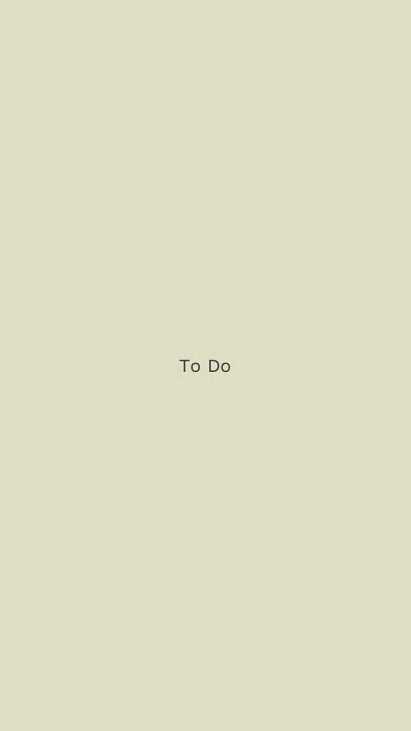

Frontside
Probably the best beginner trick to start with. Approach with speed and jump with both feet and land equally balanced on the center of your frames, with your legs a little wider than shoulder width apart.

Backside
Similar to a frontside, but slightly more difficult with the rail to your back. At first it might feel weird to have your back foot out of view. It helps to practice by jumping on a curb, or another rough edge you won't slip off.

Royale
Much like a frontside, but lean both your ankles backward. You'll find it's much easier to bend with your knees to allow your ankles to rest. Make sure you lean forward otherwise you'll slip back.

Backside Royale
Very similar to a frontside royale but a bit more challenging since the rail is behind you.

Frontside Full Torque
Once you've mastered a frontside try leaning the groove on your front foot too. It looks simple but can be challenging to keep your front foot leaning forward. Bend your knees to make it easier to lean your ankles. Also called front farv/fahrvergnügen.

Backside Full Torque
Similar to a frontside full torque, but backside. Some find this much easier than the frontside version, some vice versa. Start with the one that's most comfortable to you and then work on the other. Also called back farv/fahrvergnügen.

Soul Grind
A classic trick - easy to learn but hard to jump on with both feet at first. Practice by stepping on with your soul foot first. Once mastered it's one of the easier tricks to balance for longer grinds.

Acid Soul Grind
Similar to a soul grind, but your front foot is angeled with the inside of the front foot open. Rely on your soul foot to be solid before trying this one.

Mizou
This is another good starter soul trick. Start with more weight on your soul foot and getting comfortable with your back foot on the h-block. Lean your soul foot on top of the rail and putting more weight on the back foot. Stretch out your stance for more balance.
Makio
When you're mastered the basic soul tricks try this classic one footed trick. The key to holding the grab is leaning over on your soul foot while bending your knees and holding your foot up toward you.
Pornstar
Silly name, but a fun trick. After mastering the Makio this trick should come fairly easy. It's easiest if most of your weight is on your soul foot.

Mistrial
The stylish version of the mizou, this trick looks great if you bend your knees to keep the back foot nice and angeled. Some prefer to do this with the other soul foot to take advantage of a stronger backside backslide foot.
X-Grind
Keep both soul feet inline and stay completely on top of the rail. Some prefer to have their natural soul foot in front, some prefer behind.

Backslide
Another classic trick, but more advanced. Once you're comfortabe with royales try lifting your front foot and grabbing it. To learn this trick try using more speed to help you balance.

Backside Torque
After mastering the backside full torque, try putting more weight on your front foot until you can hold it comfortably with one foot. Then jump all your weight balanced between the h-block and backslide plate. Extra steezy if you grab it too (I should have).

Frontside Torque
Although very similar to the backside torque, some find this trick incredibly easier or harder, depending on comfort and familiarity. The key to this trick is to be fully commited and on top. If you slip back as you're learning it, just default to a front full torque to save yourself from falling.

Alley-Oop Soul Grind
A soul grind, but just backwards. It helps to lead with the toe of your soul foot, and then balance right on top of the rail with your heel down. The back foot will follow.

Soyale
Very similar to an alley-oop soul grind but with the back foot angeled in like a backslide. Bend your knees more to make the stance easier. Many like to soyale with their natural backslide foot and switch soul foot, like me here.

Alley-Oop Acid Soul Grind
Once you've mastered the alley-oop soul, try angeling your back foot into the acid position. Keep most of your weight on the soul foot.

Alley-Oop Pornstar
Also similar to the alley-oop soul, but cross your other foot in front of you. Keep most of your weight on your soul foot and stay on top of the rail.

Alley-Oop Makio
Once you've got confidence holding your alley-oop tricks try this one. It's harder to balance on one foot, but feels amazing when you lace it. Lead with your toe to lock on the soul foot, but then lock down your heel to balance down the rail.

Alley-Oop Mizou
Spin backward and stretch your non-soul foot in front of you in the mizou position. Some think this trick feels similar to a 270 backside royale, some think it's similar to an alley-oop makio. Try not to continue spinning so your soul foot stays locked in.
Alley-Oop Mistrial
Similar to the alley-oop mizou, but angle your front foot inward forffe the mistrial position. It helps to turn your hips soon, and keep them pointed in the opposite direction. Avoid continuing to spin as it makes it harder to hold this trick.

Alley-Oop X-Grind
Once you've mastered the forward x-grind, try it backwards. Experiment with stalling this trick to see which foot is dominant. Some rely on their front foot, some on the back foot. It's common to treat this like an alley-oop soul and just turn your back foot to lock other foot in line.
Topsoul
One of my fav's, the topsoul is just a more difficult version of the soul grind. Jump into the soul position but with the rail behind you, so you land on top or "topside". The key to balancing this is staying right on top of the rail.
Topside Acid
Similar to the acid soul grind, but jumping on topside instead. Most prefer to move their topside foot right under their body to maintain that open stance. It helps keep the front foot open.

Sweatstance
Once you've mastered the mizou and front full torque, this should be very similar. Jump right on top with both feet equally balanced. If you put too much weight on the front soul foot you'll likely lift the back foot off. Style this one out by bending your knees and getting super low.

Topside Pornstar
Once you've mastered the pornstar grind, try it topside. Keep most of your weight on your front foot and hover the back foot right behind your heel.
Fishbrain
Similar to a makio, but put a lot more weight on your ankle. You'll need to lean right on top of the rail to balance it. One way to ease into learning it is to jump almost straight onto the rail. Then move over a bit further as you're jumping on to help you stay topside. Then grab your foot and hold it up higher for more steezee
Frontside Unity
Another classic from the 90s, the frontside unity is a really cool feeling trick. Most have a dominant foot to help them balance - for me it's my front foot since I royale with it. Try stalling this on a curb a bunch of times before hitting the rail, it can be a weird feeling to have your feet crossed at first.
Backside Unity
Similar to the frontside unity, but backside. Which changes the feeling of trick entirely in this case. I put more weight on my backside torque foot at the back and use that to save myself if I miss.

Alley-Oop Unity
If you felt really comfortable with the unity, or alley-oop pornstar, this trick might be a good one to try next. The key is keeping evenly balanced and use your dominant foot to help you jump on the first few times. This is often called a "savannah" depending on where you're from.

Alley-Oop Backside Unity
If you feel comfortable with all the other unity tricks, try this one next. The tough part is wrapping your front foot all the way around your body. Again, take advantage of your dominant foot from either the back backslide (for the front foot) or back torque (for the back foot). Also often called a "truespin savannah" or "backside savannah" depending on where you're from.

Kindgrind
Instead of alley-oop sweatstance, or alley-oop topside mizou, this trick got it's own name. This is probably the easiest alley-oop topside grind to get you started. It's very similar to a frontside royale, but just turn your foot and lock in the alley-oop topside foot.
Misfit
Very similar to a kindgrind, but angle your front foot inward. Some prefer to do this with their opposite or "switch" soul foot to take advantage of their stronger front torque foot.

Alley-Oop Topside Pornstar
This trick is a unique feeling one - but can be helpful to try after mastering the kindgrind. Most of your weight will be on your back soul foot, and balance right on top with your legs crossed. It helps to tuck your back foot against the heel of your soul foot for balance.

Alley-Oop Fishbrain
After jumping turn your hips to point backward, and land on your topside soul foot balanced right on top of the rail. If you don't turn enough it'll be hard to stay on top of the rail, if you continue turning it'll be hard to hold. I find it easier to put more weight on the toe at first rather than the heel. Grabbing this trick often forces you to commit, and of course looks way sicker.

Alley-Oop Topsoul
Spin a full 180 and land backwards in the topsoul position. It helps to trust your soul foot and lock it into place right underneath you. Some prefer to use the non-soul foot to help lock this trick, some prefer to lock their heel in.
Alley-Oop Topside Acid
A similar feeling to the alley-oop tousoul, but land with you back foot open and on the outide of the h-block. Some find this much easier than the alley-oop topsoul because it feels more natural to turn your front foot this way. I'm not one of those people and this trick is hard as hell for me.

Truespin Topsoul
Much like the alley-oop topsoul, but spin the other way and inward or "truespin". This trick might feel weird at first since your soul foot is turned inward. Most prefer to guide this trick with the toe of their soul foot first, then lock the heel down and balance it out. Your back foot can be helpful to save yourself if you miss the soul foot.

Truespin Topside Acid
Building on the truespin topsoul, try turning your back foot open in the acid soul position. At first try stalling this trick over and over to build up the muscle memory. Most find it helpful to aim the soul foot with the toe landing first.
Truespin Topside Pornstar
After feeling comfortable with other truespin topside tricks, try wrapping your non-soul foot around the back of your topside soul foot. It helps to be very confident with the topside soul foot. Practice by stalling first, then be sure to approach with enough speed comfortably. If on a rail, it's easier to learn by approaching straight on. It helps reduce the angle you'll have to spin.
Truespin Fishbrain
Probably the toughest truespin topside trick - this will turn heads every time you lace it. Approach it similar to the truespin topside pornstar, but since all your weight is on one foot you'll want to be evenly balanced on top of the one foot. Spin over top of the rail and land with your hips squarely pointing backward. Try not to keep spinning otherwise it'll be hard to hold the trick.
Truespin Mizou
Spin with the rail on your backside (left side if you are right footed, right side if you're left footed) and stretch your front foot out to guide your landing. Think of it like a backside royale, but continue turning your soul foot, and open your stance up, to lock that soul foot in place.

Truespin Pornstar
Similar to the true mizou but feels quitef different with the back foot turned and crossed the other way. Practice by stalling but keep in mind that with any spinning tricks they feel much different when moving. Guide with your truespin soul foot and turn entirely backward. At first you'll find it's easier to lock your soul foot first, then slap the back crossed foot down afterward.

Truespin Makio
Once either the truespin mizou or truespin pornstar are comfortable, try this one. You may find it's much safer to attempt since you can use your other foot to save yourself, but balancing it is much harder. Make sure you have even weight on the toe and heel of your soul foot to hold this one longer.

Truespin Soul Grind
Probably one of the harder truespin tricks, you'll need to spin around trust your blind spot. Pay attention to how close you are to the rail for this one. You may find that being closer and cutting down on the angle you'll need to turn makes it much easier. To balance longer put a bit more weight on your soul foot.

Negative Mistrial
If this is your introduction to negative tricks - you'll be amazed to hear that all soul tricks have a version on the inside or "negative" part of the boot. I don't do a lot of negative tricks but I find this one to be fun and cool looking. Some find it easier to do this trick the same way they royale to take avantage of the stronger backslide foot. Remember that negative souls are much smaller so you'll need to lean over a bit more to balance this one.

270 Backside Royale
Spin almost fully around and land in the backside royale position. You'll find that you can lead with your back foot to place yourself as you're spinning around. The foot foot should follow.
Fast Slide
A hard trick to balance, but simple to jump on. Most do this with their stronger foot leading. Try to land on top of the rail and balance your one foot evenly on the h-block between your middle wheels. Save yourself by putting down your back foot as you're learning this one. Try lifting your back foot higher to steeze it out for some more style points.

To Do
Any requests? Feel like a trick isn't here and it should be? DM me on IG.